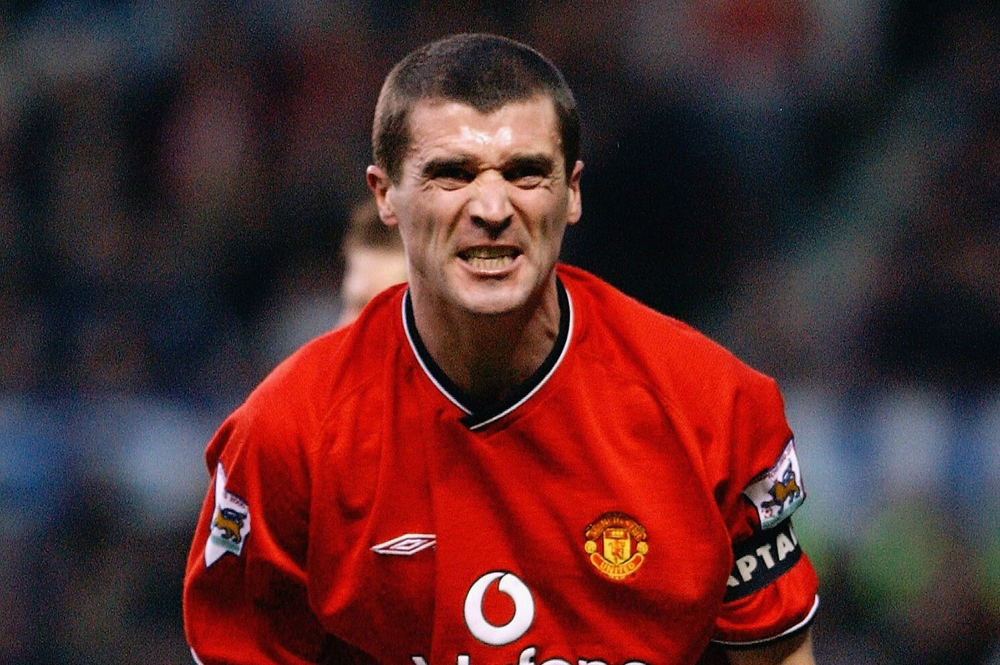

Sport

Roy Keane is one the most famous and controversial sport stars Ireland has had. He has captained
his country, as well as walked away form a World cup because of conflict. He is currently the Assistant
manager of the Irish Football team. He was also very successful at club level playing in the Premier League for
Nottingham Forest before moving for a then British record fee to Manchester United for £3.75 million. He captained
the club for nearly a decade and won 19 major trophies over his career to be the joint most successful Irish player
of all time with Dennis Irwin and Ronnie Whelan.
HomePage
Portlaoise
Music